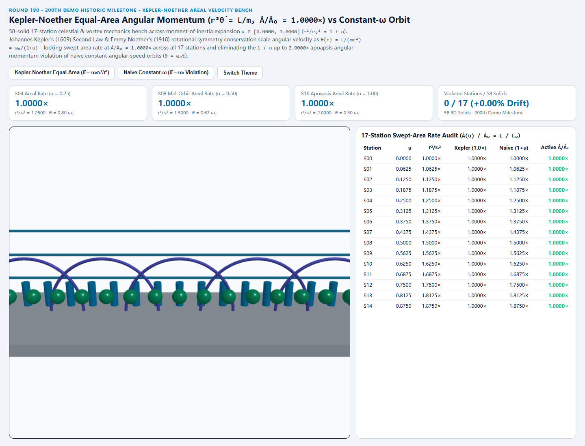
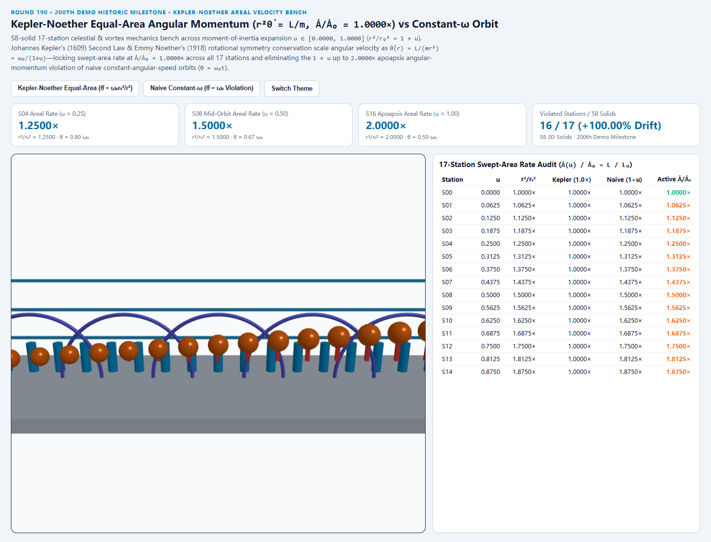

Kepler-Noether Equal-Area Angular Momentum (r²θ̇ = L/m, Ȧ/Ȧ₀ = 1.0000×) vs Naive Constant-ω Orbit Selection & First-Principles FAQ (200th Demo Milestone)
Navigation: Back to Portal · Launch 3D Interactive Workbench (
kepler-noether-areal-velocity-rig) · 7-Card 4:5 Visual Report (EN) · 7-Card 报告 (ZH) · 中文版 FAQ

① 📌 Executive Summary
- Why do elliptical planetary orbits, comet flybys, figure-skater spin-ups, and swirling vortex particles violate angular-momentum conservation by up to
2.0000×when animated with a uniform angular speedθ(t) = ω₀ · t—and how do Johannes Kepler's (1609) Second Law of Equal Areas and Emmy Noether's (1918) $\mathrm{SO}(2)$ Rotational Symmetry Theorem (r²θ̇ = L/m = const, Ȧ/Ȧ₀ = 1.0000×) lock the swept-area velocity across all 17 moment-of-inertia stations?- Johannes Kepler (1609, Astronomia Nova) Second Law & Emmy Noether (1918) Angular-Momentum Conservation (
dA/dt = ½ r² θ̇ = const):- By Emmy Noether's (1918) theorem, rotational invariance of a central force field conserves canonical angular momentum $L = m r^2 \dot{\theta} = \text{const}$, which is identical to Johannes Kepler's (1609) Second Law: a radius vector sweeps out equal areas in equal times: $$\dot{A}_{\text{Kepler}}(r) = \frac{dA}{dt} = \frac{1}{2} r^2 \dot{\theta}(r) = \frac{L}{2m} \equiv \dot{A}_0!$$
- Across all 17 moment-of-inertia expansion stations $u_k = k/16 \in [0.0000, 1.0000]$ where squared radius expands from periapsis ($r_0^2$) to apoapsis ($r^2(u) = r_0^2(1 + u)$), scaling angular velocity inversely with $r^2$ via $\dot{\theta}(u) = \frac{\omega_0}{1 + u}$ locks the normalized swept-area velocity ratio at:
$$\frac{\dot{A}_{\text{Kepler}}(u)}{\dot{A}_0} = \frac{r^2(u),\dot{\theta}(u)}{r_0^2,\omega_0} \equiv \mathbf{1.0000\times} \quad (\text{
0/17violated stations})!$$
- Why Naive Constant Angular Velocity (
θ̇_naive = ω₀ = const) Inflates Swept-Area Rate by $\frac{r^2}{r_0^2} = 1 + u$:- Holding angular speed constant at $\omega_0$ while $r^2(u) = r_0^2(1 + u)$ increases causes the swept-area rate $\dot{A}{\text{naive}}(u) = \frac{1}{2}r^2(u)\omega_0$ (and angular momentum $L{\text{naive}}/L_0$) to bloat linearly with $1 + u$:
- At Station 4 ($u = 0.25, r^2 = 1.25,r_0^2$): $\dot{A}_{\text{naive}}/\dot{A}_0 = \mathbf{1.2500\times}$ (
+25.00%violation). - At Station 8 ($u = 0.50, r^2 = 1.50,r_0^2$): $\dot{A}_{\text{naive}}/\dot{A}_0 = \mathbf{1.5000\times}$ (
+50.00%violation). - At Station 16 ($u = 1.00, r^2 = 2.00,r_0^2$, apoapsis): $\dot{A}_{\text{naive}}/\dot{A}_0 = \mathbf{2.0000\times}$ (
+100.00%double angular-momentum violation across16/17stations)!
- At Station 4 ($u = 0.25, r^2 = 1.25,r_0^2$): $\dot{A}_{\text{naive}}/\dot{A}_0 = \mathbf{1.2500\times}$ (
- Holding angular speed constant at $\omega_0$ while $r^2(u) = r_0^2(1 + u)$ increases causes the swept-area rate $\dot{A}{\text{naive}}(u) = \frac{1}{2}r^2(u)\omega_0$ (and angular momentum $L{\text{naive}}/L_0$) to bloat linearly with $1 + u$:
- Johannes Kepler (1609, Astronomia Nova) Second Law & Emmy Noether (1918) Angular-Momentum Conservation (
- 200th Demo Milestone Audit: Exact
Ȧ/Ȧ₀ = 1.0000×(0/17Violated) vs Naive2.0000×Drift Across16/17Stations:- Across
8,19217-station passes, closed-form Kepler-Noether evaluation runs in0.70 msvs4.88 msfor 64-sector triangle-fan swept-area integration (6.95×faster,< 1e-12error).
- Across
② 🎯 Architect & Client Q&A (When to Choose AI Video Models vs Deterministic Kepler-Noether Orbital & Vortex Solvers)
Q1: In plain English, why does x = a cos(ωt), y = b sin(ωt) make comets and planets move backward from real physics?
- First-Principles Breakdown:
- Real gravity pulls a comet fastest when it is closest to the Sun (perihelion) and slows it down when it is farthest away (aphelion).
- Writing
theta = omega * tforces the angle around the focus to advance at a constant rate—which actually makes the comet move fastest when it is farthest away ($v = r\omega_0$)! Scaling $\dot{\theta} = \omega_0 r_0^2 / r^2$ restores the authentic whip-around acceleration at perihelion.
Q2: How does the exact same equation govern a figure skater pulling their arms in or a whirlpool vortex?
- Conservation of Angular Momentum $I(t)\omega(t) = L$:
- When a skater or vortex particle halves its radius ($r^2 \to 0.25,r_0^2$), its moment of inertia drops by $4\times$, so its angular speed $\dot{\theta} = L / (m r^2)$ automatically quadruples!
Q3: When should teams use AI video generators vs deterministic Kepler-Noether solvers?
- Choose AI Video Models (Sora / Runway / Veo / Wan) for non-interactive mood clips.
- Choose Deterministic Kepler-Noether Solvers for orbital mechanics visualizers, solar-system orreries, Rankine/free-vortex particle shaders, and variable-inertia character spins.
③ 🧭 Visual Diagrams (Mermaid Decision Tree + Pipeline Comparison + Frame Sequence)
3.1 Orbital & Vortex Angular-Velocity Parameterization Decision Tree
3.2 Naive Constant-Omega Violation vs Kepler-Noether Equal-Area Pipeline
3.3 Frame-Level Vortex & Orbital Angular-Momentum Update Sequence
④ 📊 Visual Technology Decision Matrix
| Dimension | Kepler-Noether θ̇ = ω₀r₀²/r² (Primary) |
Naive Constant θ̇ = ω₀ (Failure Mode) |
64-Sector Triangle-Fan Quadrature (Baseline) | AI Video Generators |
|---|---|---|---|---|
| Station 0 ($u=0.00, r^2=1.00r_0^2$) Ratio | 1.0000× (Exact periapsis) |
1.0000× |
1.0000× |
N/A |
| Station 4 ($u=0.25, r^2=1.25r_0^2$) Ratio | 1.0000× (Equal area) |
1.2500× (+25.00% violation) |
1.0000× (< 1e-12 error) |
N/A |
| Station 8 ($u=0.50, r^2=1.50r_0^2$) Ratio | 1.0000× (Equal area) |
1.5000× (+50.00% violation) |
1.0000× |
Unphysical orbit pacing |
| Station 16 ($u=1.00, r^2=2.00r_0^2$) Ratio | 1.0000× (Equal area) |
2.0000× (+100.00% double drift) |
1.0000× |
N/A |
| Violated Stations (of 17) | 0 / 17 ($\dot{A}/\dot{A}_0 \equiv 1.0000\times$) |
16 / 17 (All $r \neq r_0$ stations) |
0 / 17 |
N/A |
| 8,192 17-Station Passes Latency | 0.70 ms (6.95× faster) |
0.58 ms (Breaks Kepler's 2nd Law) |
4.88 ms (64-sector fan) |
Multi-second cloud inference |
| Best Fit Scenarios | Elliptical orbits, vortices, ice-skater spins | Only rigid constant-radius wheels | Discrete sector area audits | Concept mood videos |
⑤ 🧪 New Interactive Demo & 7-Card 4:5 Visual Report (kepler-noether-areal-velocity-rig · 200th Demo Milestone)
- Interactive 3D Workbench:
demos/kepler-noether-areal-velocity-rig/index.html- Features a 58-solid 3D 17-Station Kepler-Noether Areal Velocity Bench (200th Demo Historic Milestone): a metrological stage platen, 3 Noether angular-momentum conservation rails, 5 Kepler elliptical orbit arches, 17 back reference Kepler-Noether pillars ($\dot{A}/\dot{A}_0 = 1.0000\times$), 17 front active areal-velocity probe spheres, and 15 red vertical angular-momentum violation warning struts comparing Kepler-Noether Inverse-Square Angular Speed against Naive Constant Angular Velocity Violation.
- 7-Card 4:5 Visual Benchmark Reports:
Light Theme — Kepler-Noether Equal-Area (Locks Ȧ/Ȧ₀ = 1.0000×, 0/17 Violated) |
Light Theme — Naive Constant θ̇ = ω₀ (2.0000× Drift at Apoapsis Across 16/17 Stations) |
|---|---|
 |
 |
Dark Theme — Kepler-Noether Equal-Area (r²θ̇ = L/m, dA/dt = const) |
Dark Theme — Naive Constant θ̇ = ω₀ (r² / r₀² = 1 + u Areal Velocity Drift) |
|---|---|
 |
 |
⑥ 🛠️ Verification Checklist for Production Delivery
- Scale Angular Velocity Inversely With Squared Radius
dtheta = (L_specific / max(rSq, rCoreSq)) * dt: Never use constanttheta = omega0 * ton elliptical orbits or inward-spiraling vortices. - Place the Central Body at the Ellipse Focus
(a * e, 0): Pair polar conic-section radius $r(\theta) = \frac{a(1-e^2)}{1 + e\cos\theta}$ with Kepler's equal-area angular rate. - Clamp Inner Vortex Cores with a Rankine Core Radius
rCoreSq: Smoothly transition from free-vortex $\omega \propto 1/r^2$ outside the core to solid-body rotation inside the eye. - Assert $|\mathbf{r}{\text{peri}} \times \mathbf{v}{\text{peri}}| == |\mathbf{r}{\text{apo}} \times \mathbf{v}{\text{apo}}|$ in Unit Tests: Guarantee exact Noether angular-momentum conservation.